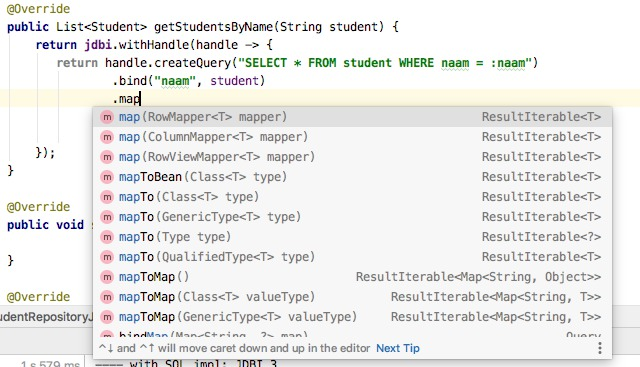
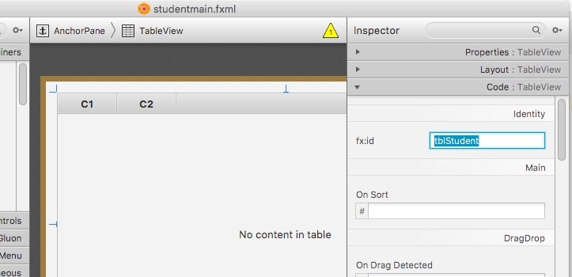
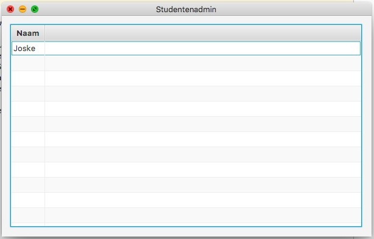

Zie Transacties failures/rollbacks voor de initiële setup van een eenvoudige Java JDBC applicatie.
Stel dat we dezelfde studenten willen inladen in een Student klasse instantie: van de TABLE STUDENT naar de class Student. In geval van JDBC is dat veel handwerk:
SELECT statements uit.ResultSet en maak een nieuwe Student instantie aan. Vang alle mogelijke fouten zelf op: wat met lege kolommen, null? Wat met INTEGER kolommen die je wilt mappen op een String property?Om van de huidige resultatenrij naar de volgende te springen in ResultSet gebruikt men de methode next() in een typisch while() formaat:
var result = statement.executeQuery("SELECT * FROM iets");
while(result.next()) {
var eenString = result.getString("kolomnaam");
// doe iets!
}Zie ook ResultSet Oracle Javadoc.
Aangezien we reeds hebben kennis gemaakt met de (beperkte) API, schakelen we onmiddellijk over naar de oefeningen:
Maak (én test!) een klasse StudentRepository die de volgende methode implementeert. Zoals je ziet is het de bedoeling dat de JDBC Connection instance elders wordt aangemaakt, bijvoorbeeld in een aparte ConnectionManager klasse.
public class StudentRepository {
public StudentRepository(Connection connection);
public List<Student> getStudentsByName(String name);
}Breid dit uit naar public void saveNewStudent(Student student);.
Breid dit uit naar public void updateStudent(Student student);. Wat moet je doen als deze student nog niet in de database zit? Welke gegevens update je wel en welke niet?
Tip:
executeUpdate() van een Statement is erg omslachtig als je een string moet stamenstellen die een INSERT query voorstelt (haakjes, enkele quotes, …). Wat meer is, als de input van een UI komt, kan dit gehacked worden, door zelf de quote te sluiten in de string. Dit noemt men SQL Injection, en om dat te vermijden gebruik je in JDBC de prepareStatement() methode. Zie JDBC Basics: Prepared Statements. De String die je meegeeft bevat in de plaats van parameters een vraagteken: INSERT INTO STUDENT(bla, bla) VALUES(?, ?). Die parameters vul je daarna aan met preparedStatement.setString() of setInt(). Op die manier is de code zowel netjes als injectie-vrij!Jdbi (Java DataBase Interface v3) is een lightweight library geschreven bovenop JDBC. Het gebruikt dus de interne Java API om te communiceren tussen de database en de Java applicatie. Echter, het maakt het leven voor ons als ontwikkelaar op heel wat vlakken véél aangenamer: waar JDBC eerder database-driven en dialect-afhankelijk is, is Jdbi eerder user-driven en met behulp van plugins dialect-onafhenkelijk.
JDBI3 is opgedeeld in modules, waarvan wij de volgende drie gaan gebruiken:
jdbi3-core (altijd nodig) - voor JDBC zit dit in de JDK.jdbi3-sqlite (voor de SQLite verbinding) - of andere DB driverjdb3-sqlobject - voor de eenvoudige mapping naar Plain Old Java Objects (POJOs)Er is ook support voor spring, jpa, guava, kotlin, …
Om bovenstaande JDBC oefening te implementeren in Jdbi3 hebben we eerst een extractie van een interface nodig voor de repository acties:
public interface StudentRepository {
List<Student> getStudentsByName(String student);
void saveNewStudent(Student student);
void updateStudent(Student student);
}Nu kan StudentRepositoryJdbcImpl (hernoem bovenstaande) en onze nieuwe StudentRepositoryJdbi3Impl de interface implements-en. Denk aan de Strategy design pattern van SES: afhankelijk van een instelling kunnen we switchen van SQL leverancier, zolang de code overal de interface gebruikt.
In plaats van JDBC’s DriverManager.getConnection() om de Connection instance te bootstrappen, gebruiken wij gewoon Jdbi.create() met ook één paremter, namelijk dezelfde connectionstring.
In plaats van de vervelende checked SQLExceptions en de createStatement() code, heb je nu de keuze om ofwel de Fluent API te gebruiken:
return jdbi.withHandle(handle -> {
return handle.createQuery("SELECT * FROM student WHERE naam = :naam")
.bind("naam", student)
.mapToBean(Student.class)
.list();
});ofwel de Declarative API, waarbij je met de @SqlQuery kan werken op een interface:
public interface StudentDao {
@SqlQuery("SELECT * FROM student")
@RegisterBeanMapper(Student.class)
List<Student> getStudenten();
}Dit vereist dat je de plugin SqlObjectPlugin installeert na de Jdbi.create(): jdbi.installPlugin(new SqlObjectPlugin());. Zie jdbi.org documentatie.
Herinner je je nog de SESsy Library? Die werkte ook op die manier! Kijk nog eens in https://github.com/kuleuven-diepenbeek/sessylibrary in de map src.main.java.be.kuleuven.sessylibrary.domain in klasse BooksRepository!
Merk op dat Jdbi3 er voor kan zorgen dat de resultaten van je query automatisch worden vertaald naar een Student instantie door middel van bean mapping: de mapToBean() methode of de @RegisterBeanMapper annotatie. Die gaat via reflectie alle kolomnamen 1-op-1 mappen op properties van je object dat je wenst te mappen. Er zijn ook nog andere mogelijkheden, zoals mappen op een HashMap, ea:

Zelfstudie. Zie jdbi.org documentatie.
Herimplementeer alle methodes van de StudentRepository interface hierboven, maar dan in Jdbi3 met de Fluent API (jdbi.withHandle()). Hernoem eerst je bestaande repository klasse naar StudentRepositoryJdbc en maak dan een nieuwe genaamd StudentRepositoryJdbi3. Om te testen of het werkt kan je je testcode van JDBC herbruiken door de code de interface te laten gebruiken in plaats van de implementatie. Bijvoorbeeld:
public class OefeningMain {
public static void main(String[] args) {
var jdbcRepo = new StudentRepositoryJdbc(...);
var jdbiRepo = new StudentRepositoryJdbi3(...);
doStuff(jdbcRepo);
}
public void doStuff(StudentRepository repository) {
// uw repository.getStudentsByName, saveNewStudent, ... tests hier
}
}Extra Oefening: Maak een nieuwe implementatie van de repository interface die via de Jdbi3 Declaratie API de queries doorgeeft naar de SQLite DB. D.w.z., lees in de Jdbi3 developer guide na hoe je de Declarative API gebruikt en verwerk dit. Tip: jdbi.withExtension(StudentDao.class, ...).
Tip:
Met Java database access enigszins onder de knie kijken we verder dan alleen maar de “repository”. Op welke manier kunnen we onze STUDENT tabel visueel weergeven, en er studenten aan toevoegen of uit verwijderen?
Dat kan op verschillende manieren, van HTML (SESsy Library) en JavaScript API calls naar iets eenvoudiger vanuit het eerstejaarsvak INF1: JavaFX. Je kan in JavaFX eenvoudig TableView stukken positioneren op een AnchorPane en die vullen met de juiste kolommen en rijen. De data blijft uiteraard uit de SQLite DB komen via JDBC/Jdbi. De StudentRepository is dus slechts één deel van het verhaal: waar wordt deze gebruikt? In JavaFX controllers.
Er zijn een aantal aanpassingen nodig aan je build.gradle file om van een gewone Java applicatie over te schakelen naar een JavaFX-enabled applicatie. We hebben de application en javafxplugin plugins nodig onder plugins {}, verder ook een javafx {} property groep die bepaalt welke modules van JavaFX worden ingeladen:
plugins {
id 'application'
id 'org.openjfx.javafxplugin' version '0.0.9'
}
repositories {
mavenCentral()
}
javafx {
version = "13"
modules = [ 'javafx.controls', 'javafx.fxml' ]
}
dependencies {
compile group: 'org.xerial', name: 'sqlite-jdbc', version: '3.32.3.2'
compile group: 'org.jdbi', name: 'jdbi3-core', version: '3.17.0'
compile group: 'org.jdbi', name: 'jdbi3-sqlite', version: '3.17.0'
compile group: 'org.jdbi', name: 'jdbi3-sqlobject', version: '3.17.0'
testCompile group: 'junit', name: 'junit', version: '4.12'
}
group 'be.kuleuven.javasql'
version '1.0-SNAPSHOT'
sourceCompatibility = 1.13
mainClassName = 'be.kuleuven.javasql.SqlFxMain'Herinner je het volgende over JavaFX:
Application en laadt de hoofd-.fxml file in.public void initialize() methode waar action binding in wordt gedefinieerd..fxml files beheer je met SceneBuilder. Vergeet hier niet de link naar de fully qualified name van je controller klasse te plaatsen als AnchorPane attribuut: fx:controller="be.kuleuven.javasql.controller.StudentController".Voor onze studententabel visualisatie hebben we een TableView nodig. Daarnaast eventueel Buttons om te editeren/toe te voegen/… Vergeet de fx:id van de tabel niet:

Kolommen (en de inhoud van de rijen) definiëren we in de controller zelf:
@FXML
private TableView<Student> tblStudent;
public void initialize() {
tblStudent.getColumns().clear();
TableColumn<Student, String> col = new TableColumn<>("Naam");
col.setCellValueFactory(f -> new ReadOnlyObjectWrapper<>(f.getValue().getMaam()));
tblStudent.getColumns().add(col);
tblStudent.getItems().add(new Student("Joske", "Josmans", 124, true));
}Merk op dat TableView een generisch type heeft, en we zo dus heel eenvoudig onze eigen POJO rechtstreeks kunnen mappen op de Student klasse! Als we dit opstarten krijgen we alvast één kolom te zien met de naam (f in de CellValueFactory is een wrapper waarvan de waarde de huidige student in de rij is. getNaam() zorgt ervoor dat de juiste waarde in de juiste cel komt te staan)

getItems().add(new student...).Tip: Vanuit een JavaFX controller een ander scherm openen is een kwestie van een nieuwe Stage en Scene object aan te maken:
private void showScherm() {
var resourceName = "bla.fxml";
try {
var stage = new Stage();
var root = (AnchorPane) FXMLLoader.load(getClass().getClassLoader().getResource(resourceName));
var scene = new Scene(root);
stage.setScene(scene);
stage.setTitle("dinges");
stage.initModality(Modality.WINDOW_MODAL);
stage.show();
} catch (Exception e) {
throw new RuntimeException(e);
}
}Zit je vast? Raadpleeg de TableView JavaDocs: https://openjfx.io/javadoc/13/javafx.controls/javafx/scene/control/TableView.html